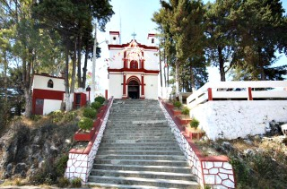
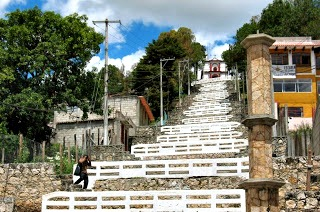
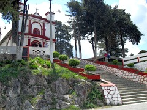
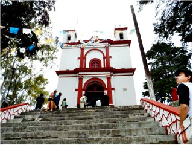
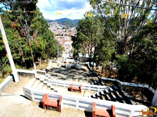

Levantándose del corazón del valle, El cerro de San Cristóbal tiene en su cima un santuario dedicado al patrón de la ciudad y de la diócesis.
La idea de mantener en ese lugar proviene de varios siglos atrás. El que existía fue destruido casi por completo a consecuencia de la guerra, el 8 de febrero de 1838; una familia piadosa lo reconstruyó en 1850. A la iniciativa particular se deben los arreglos que se le hizo en 1913. El deseo de reabrir el santuario animó a un grupo de vecinos no solo a promover la reconstrucción sino a intentar el trazo de un camino que permitiría subir con vehículos. Los trabajos comenzaron en 1941 y concluyeron en 1943.
Hoy en día este lugar es un espacio que busca incrementar el aprecio y cuidado del bosque urbano y proteger áreas verdes similares ya que es una muestra de la gran riqueza biológica contenida en un espacio relativamente pequeño, en el corazón de la ciudad de San Cristóbal de Las Casas, Chiapas.
Se encuentra ubicado en la calle Hnos. Dominguez a 2 cuadras del arco del carmen
Si usted se encuentra ubicado en la plaza de la paz viendo de frente hacia la catedral puede caminar hacia su derecha pasando por la plaza 31 de Marzo como referencia encontrará el Banco Santander y Frente a este la Farmacia Similar entre estos dos lugares encontrará el andador eclesiástico, continue caminando tres cuadras por el andador hasta llegar al Arco del Carmen de vuelta a la derecha y justo frente a usted verá el cerrito, camine 2 cuadras para llegar hasta las gradas y subir.
En el lugar usted puede realizar actividades como:
* Fotografía
* Juegos
* Asistencia a parques públicos
* Visitar el mirador
* Contemplación del paisaje
* Visita a iglesias
* Visitar el mirador
* Asistencia a fiestas populares





posicione el mouse sobre las imágenes